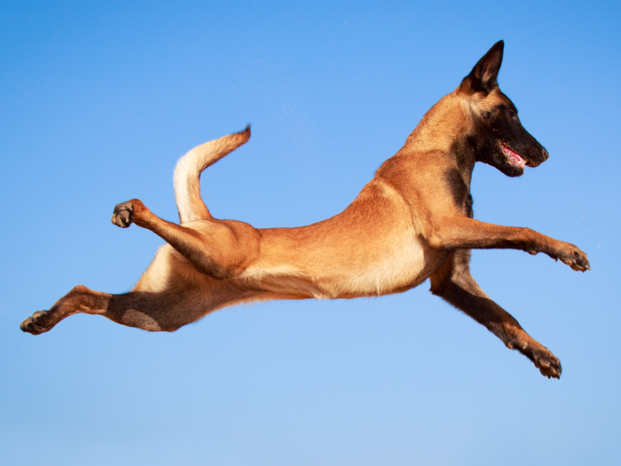

Malinoa je pas srednje veličine, kratke dlake i u konturama izgleda četvrtasto. Iako ih široka javnost često pomeša sa nemačkim ovčarima, oni su četvrtastog profila i lakših kostiju, profinjenije glave. Malinoa je rumene, crvene ili sive boje sa crnim osenčenjem na vrhovima dlake. Repovi su im obično tamniji ili imaju crni vrh, lice ima crnu masku, a uši su uglavnom crne. Odrasli mužjaci su između 61-66 cm, a ženke između 56-61 cm. Teški su između 27,5 - 28,5 kg.
